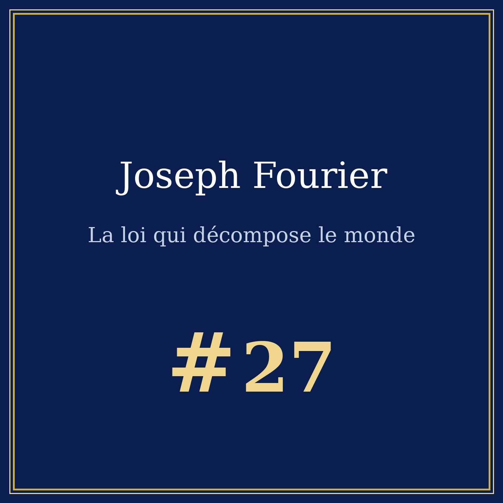
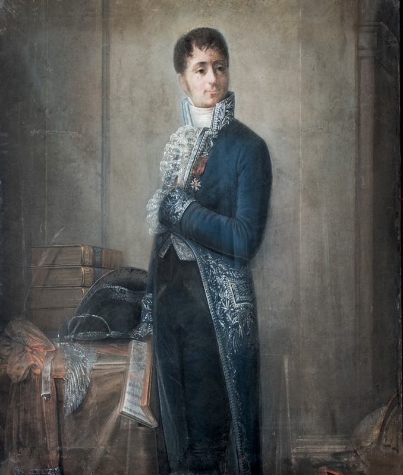

Portrait n°27 — le préfet qui a appris à la chaleur à parler en ondes
Œuvre de fiction radiophonique et biographique à caractère historique et patrimonial. Les faits présentés dans cet article sont réels et sourcés ; l'entretien est une reconstitution imaginée.


🎧 Écoutez le portrait : Joseph Fourier — La loi qui décompose le monde, 14 min 06 — Écouter sur Spotify →
Sources : Wikipédia, Académie française, Académie des sciences. Entretien enregistré à Paris, printemps 1830.
Jean-Baptiste Joseph Fourier naît le 21 mars 1768 à Auxerre, fils d'un tailleur, et meurt le 17 mai 1830 à Paris. Orphelin dès dix ans, il grandit en pension à l'abbaye. À douze ans, l'évêque d'Auxerre le fait entrer à l'école militaire des bénédictins, où l'on enseigne les mathématiques aux futurs officiers ; il professe à seize ans, et les équations algébriques lui laissent des maux qu'il gardera toujours.
En 1789 il entre dans la Révolution et préside la société populaire d'Auxerre. Le 4 juillet 1794 il est arrêté ; le 9 Thermidor, quand tombe la tête de Robespierre, la sienne est sauvée. Il en sort marqué : « je m'étais juré de ne plus payer de mots ». En 1795 il suit l'École normale — Lagrange, Monge, Laplace, Berthollet — puis lui succède.
En 1798 il embarque à Toulon avec l'armée de Bonaparte et entre à l'Institut d'Égypte : quarante-huit membres, quatre sections, Bonaparte dans la section mathématique, Monge président. La charge de secrétaire perpétuel lui est votée à l'unanimité. Avec Costaz il décrit le pays jusqu'en Haute-Égypte ; Bonaparte lui confie les funérailles de Kléber. De ces années sort la Description de l'Égypte, dont il rédige la préface : l'ouvrage d'une société, non d'un seul.
Revenu en France, il est préfet de l'Isère de 1802 à 1814 : route de Grenoble à Briançon par le col du Lautaret, marais asséchés, faculté impériale de Grenoble. Un préfet qui calcule. Dans son appartement, avec des chaudières et des thermomètres, il vérifie ses formules sur une plaque de métal : la chaleur arrive de l'autre côté, mais elle ne coule pas comme un fluide, elle se diffuse.
Personne ne savait dire comment la chaleur passe d'un corps à l'autre, ni en combien de temps. Le 21 décembre 1807, Fourier présente à l'Académie un mémoire intitulé Théorie de la propagation de la chaleur dans les solides. Il a mis l'équation : la température en un point, à un instant donné, s'écrit comme une somme de sinus et de cosinus — des ondes, les mêmes qui portent le son et la lumière. Il n'a pas supposé la chaleur : il l'a mesurée.
Tout tient en une image : une courbe compliquée n'est pas une énigme. Ce qui se répète, ce qui ondule, se décompose en un petit nombre de mouvements simples, et l'on peut remonter du simple au complexe. Une sonnerie de cloche, une température qui diffuse, une voix : le même langage. Dans un métal, la température d'une plaque ne s'écrit pas par une formule compliquée, mais par une somme d'ondes sinusoïdales.
En 1812, l'Institut met la propagation de la chaleur à son grand prix de mathématiques et couronne sa pièce. Et là, catastrophe de la science : les commissaires du prix — Laplace, Lagrange, Legendre — proclament la nouveauté du sujet et déclarent en même temps que la démonstration n'est pas aussi établie qu'elle devrait.
Poisson ne se contente pas de lire le travail : il en fait une attaque cinglante, et Fourier se voit blâmé par ceux qui, d'ordinaire, le défendent. Il fait alors une chose qu'il n'avait jamais faite : imprimer le livre lui-même, sans attendre l'Académie. Les 639 pages de la Théorie analytique de la chaleur sortent en 1822. La même année, Delambre meurt et l'Académie élit son secrétaire perpétuel : on prépare Fourier, Biot est éliminé, et il l'emporte par 38 voix contre 10. Ce poste lui donne ce qu'il voulait, la publication — et sa préface dit que « les retards de la publication ont rendu le travail plus clair ».
Destitué le 17 mai 1815 pour avoir refusé des mesures jugées extrêmes, élu à l'Académie des sciences en 1816 mais refusé par Louis XVIII, il lui faut une seconde élection et un second vote du roi, en 1817, pour s'asseoir. « on m'a refusé l'artillerie parce que je n'étais pas noble ; on m'a refusé l'Académie, on m'a refusé la publication. Mais on ne m'a jamais refusé de travailler ». Il soutient Champollion, et obtient à Sophie Germain — qui écrivait sous le nom de Monsieur LeBlanc — le droit d'assister aux séances.
Élu à l'Académie française en 1826, il y est reçu en avril 1827 ; on lui demande l'éloge de son prédécesseur, et il ne parle que de lui. Le 4 mai 1830, une chute aggrave tout ; le 16 mai, dans son cabinet de travail de la rue d'Enfer, il a sa dernière crise et appelle le médecin — puis « vite, vite, du vinaigre, je m'évanouis ». Il meurt dans son lit, à soixante-deux ans.
Fourier est mort trop tôt : son livre n'est traduit en anglais qu'en 1878, cinquante-six ans après sa publication. Il a disparu avant d'être compris — mais sa grammaire est devenue celle de tout le monde. Lire les hauteurs d'un son ou les formes d'une image, c'est décomposer le signal en ses composantes : c'est l'analyse spectrale, et avec elle tout le traitement du signal — filtrer un bruit, isoler une fréquence, compresser une image. En acoustique, elle sert à analyser instruments et voix ; en imagerie, à lire des images médicales. Et l'effet de serre était là, avant l'heure : en retenant une part de la chaleur rayonnée, l'atmosphère élève la température de la surface — Fourier, appuyé sur la boîte noire de Saussure, avait posé la question.
Après Pythagore et la musique des sphères, le duel des diapasons 432 vs 440, Beethoven face au silence, Winfried Schumann face au murmure de la Terre et Marie Curie, la femme aux deux prix Nobel, la série atteint enfin la loi elle-même : un homme qui a appris à la chaleur — puis au son, puis à l'image — de s'écrire en ondes.